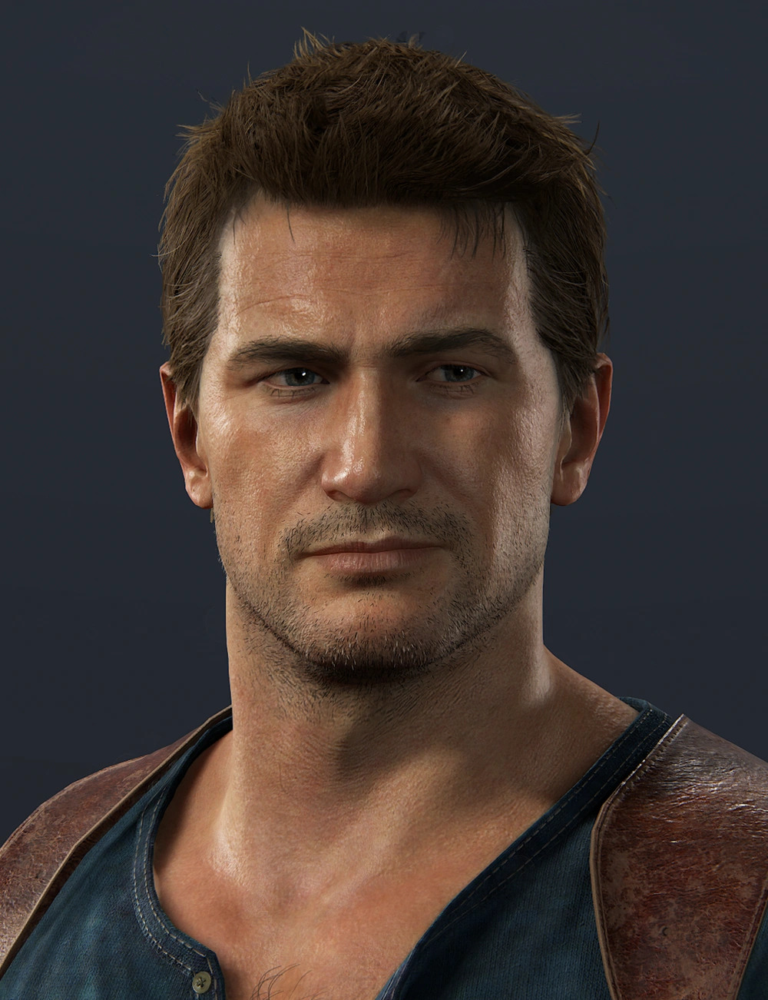
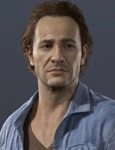
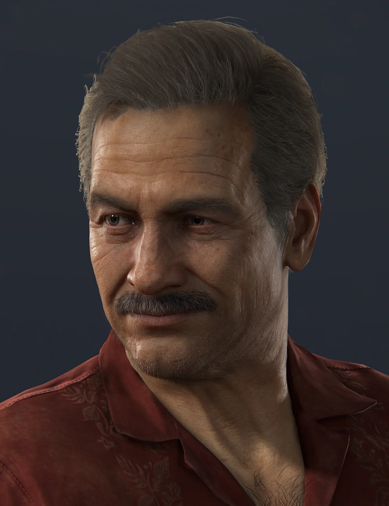
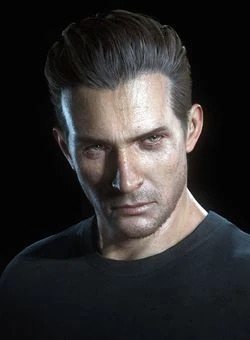
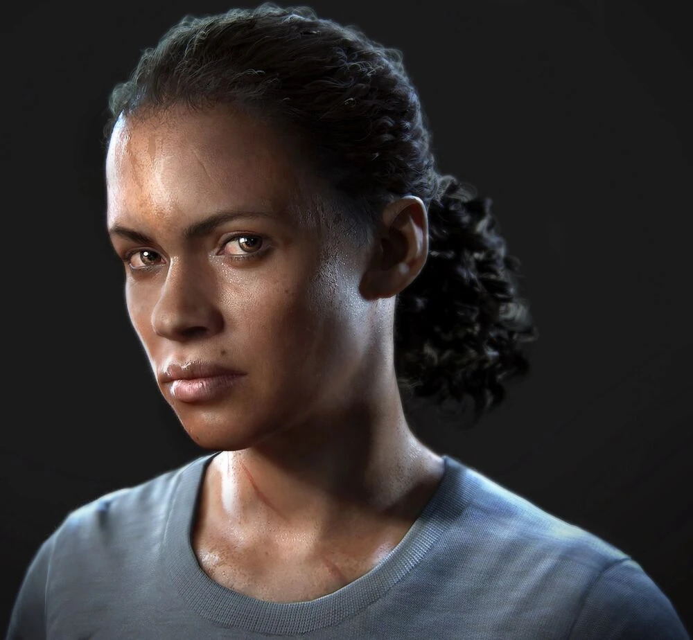

Personajes Principales
Estos son los personajes principales del juego, en el cuadro a continuación en el que se presenta una breve descripción y una foto extraída del juego para mayor referencia.
| Foto | Nombre | Descripción |
|---|---|---|
 |
Nathan Drake | El protagonista de esta historia, un cazador de tesoros retirado. |
 |
Samuel Drake | El hermano mayor de Nathan, que regresa misteriosamente después de mucho tiempo. |
| Elena Fisher | Periodista y esposa de Nathan, figura clave en su vida. | |
 |
Victor "Sully" Sullivan | Mentor, amigo y figura paterna para Nathan. |
 |
Rafe Adler | El villano principal del videojuego, un exsocio obsesionado con el tesoro. |
 |
Nadine Ross | Líder de la organización militar privada Shoreline, contratada por Rafe. |